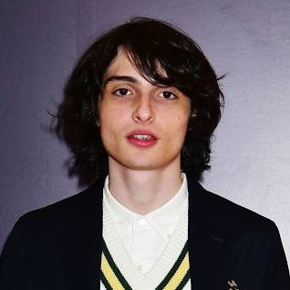
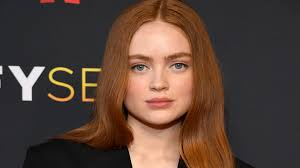
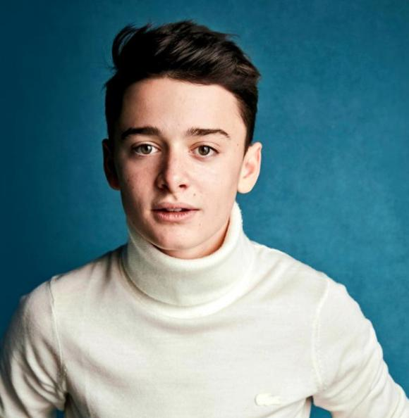
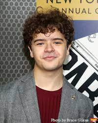
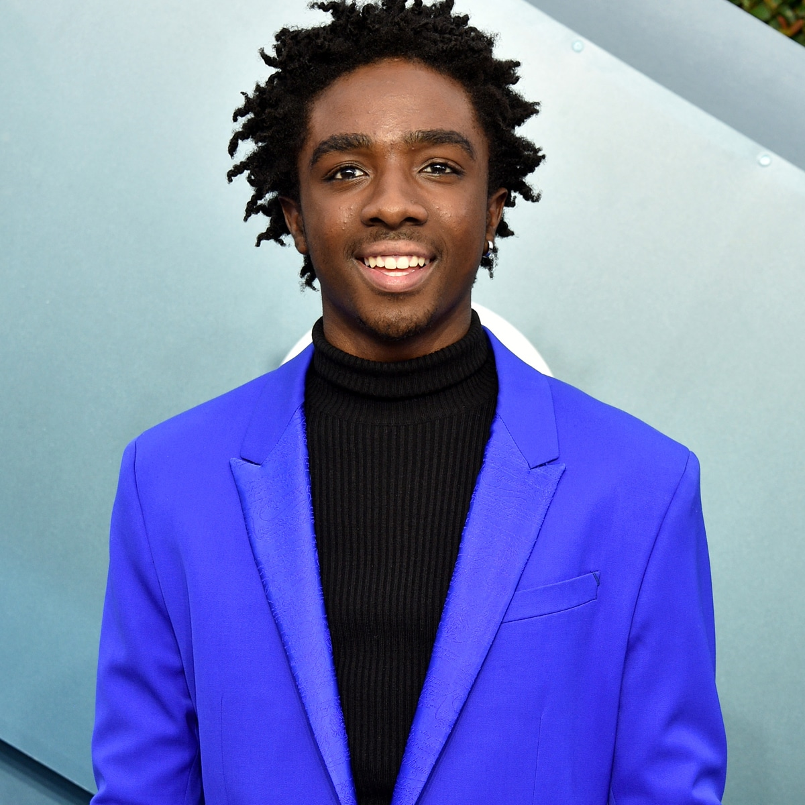

| Name |
image |
Description |
Film |
Nationality |
Occupations |
Awards |
| Millie Bobby Brown |
|
Millie Bobby Brown (born 19 February 2004) is a British actress.[1] She 300px
for playing Eleven in the Netflix science fiction series Stranger Things (2016–present), for
which she received nominations for two Primetime Emmy Awards. Brown has starred in the
monster film Godzilla: King of the Monsters (2019) and its sequel Godzilla vs. Kong (2021).
She also starred in and produced the Netflix mystery film Enola Holmes (2020) and its 2022
sequel. |
- Spheres: Songs of Spacetime
- Godzilla: King of the Monsters
- Enola Holmes
- Godzilla vs. Kong
- Enola Holmes 2
| British |
|
- Primetime Emmy Awards
- Screen Actors Guild Awards
|
| Finn Wolfhard |
 |
Finn Wolfhard (born December 23, 2002)[1] is a Canadian actor and musician. He is known for
playing Mike Wheeler on the Netflix series Stranger Things (2016–present). He also played
the roles of Richie Tozier in the horror film It (2017) and its sequel It: Chapter Two
(2019), and has starred in the supernatural film Ghostbusters: Afterlife (2021). Wolfhard
has since made his directorial debut with the comedy short film Night Shifts (2020).
|
- Ghostbusters: Afterlife
- When You Finish Saving the World
- Guillermo del Toro's Pinocchio
- Untitled Ghostbusters: Afterlife sequel
- The Legend of Ochi †
| British |
- Actor
- musician
- director
- screenwriter
|
Screen Actors Guild Awards
|
| Sadie Sink |
 |
Maxine "Max" Mayfield is Susan Hargrove's biological daughter, Billy's younger stepsister,
an avid skateboarder, and the tomboy of the group who catches the attention of Lucas when it
becomes known that she has the highest score in Dig Dug.[9] Max is often shown at odds with
Billy. |
- Chuck
- Fear Street Part Two: 1978
- Dear Zoes
- Berlin Nobody †
| American |
|
- Alliance of Women Film Journalists
- Nickelodeon Kids'Choice Awards
|
| William Byers |
 |
William "Will" Byers the younger brother of Jonathan and the youngest son of Joyce, is the
shy, kind, timid, and often the most overlooked member of the party. In the group's Dungeons
& Dragons party, Will is the wizard, but later occasionally plays the role of Dungeon
Master; he is referred to as "Will the Wise". In season one, he vanishes somewhere near
"Mirkwood" after encountering the monster that escaped through a rift to the "Upside Down",
an alternate dimension discovered by the Hawkins Laboratory scientists.[6] Schnapp was
promoted to series regular for the second season, after recurring in the first.[7] |
- Enola Holmes
- Godzilla vs. Kong
- Enola Holmes 2
| United States |
|
Screen Actors Guild Awards
|
| Natalia Dyer |
 |
Nancy Wheeler is the oldest daughter of Karen and Ted Wheeler and the older sister of Mike
and Holly. Nancy is something of an outcast at school until Steve Harrington takes an
interest in her.
Their relationship lasts until the end of season two when she starts dating Jonathan after a
little help from Murray ("So get it over with!"). She is very proficient with firearms,
despite a noticeable lack of training or practice. |
- After Darkness
- I Believe in Unicorns
- Enola Holmes
| American |
|
- Young Artist Awards
- Screen Actors Guild Awards
|
| Joe Keery |
 |
Steve Harrington, who is referred to as Steve "The Hair" Harrington, is a popular student at
school. He tries to develop a relationship with Nancy and bullies Jonathan, though he comes
to regret this.[10]
Keery was promoted to series regular from the second season onwards, after recurring in the
first. Steve then played a more prominent role, developing a brotherly relationship with
Dustin, and becoming a self-described babysitter for the main group of kids. |
| American |
|
- Primetime Emmy Awards
- Screen Actors Guild Awards
|
| Gaten Matarazzo |
 |
Dustin Henderson is a friend of Mike, Will, and Lucas, and a goofy and quick-witted boy
whose cleidocranial dysplasia causes him to lisp. In the Dungeons & Dragons party, Dustin is
the Bard and has arguably the most extensive knowledge of the game, particularly the
monsters. He has a crush on Nancy, and while both he and Lucas have feelings for Max in
season two, Lucas and Max ultimately end up together. He also befriends Steve, who gives him
advice on how to make girls like him. |
- The Blacklist
- Stranger Things
- Drop the Mic
- Waffles and Mochi
| British , London |
|
- MTV Movie & TV Awards
- Nickelodeon Kids' Choice Awards
|
| Caleb McLaughlin |
 |
Lucas is the eldest child of Sue and Charles Sinclair, the elder brother of Erica, and a
friend of Mike, Will, and Dustin. Lucas is wary of Eleven at first and blatantly distrustful
of her but befriends her later.
In high school, Lucas joins the Hellfire Club and the basketball team but struggles to make
time for both clubs. At the cemetery, he, along with Dustin and Steve, helps Max escape
Vecna and comforts her after she escapes. |
- Law & Order: Special Victims Unit
- Shades of Blue
- Final Space
- The Boys Presents: Diabolical
| British , London |
|
- Teen Choice Awards
- Black Reel Awards
|